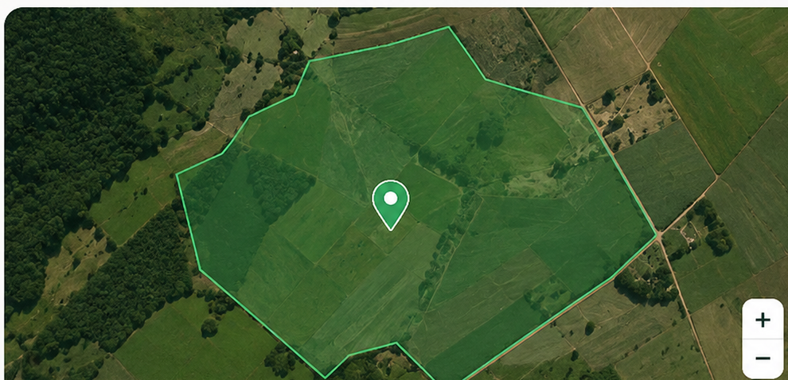

Dados climáticos
Organização de informações sobre temperatura, precipitação e umidade.
Conheça uma nova forma de relacionar dados climáticos e produção rural para apoiar o planejamento agrícola.

Inteligência no campo
A produção agrícola depende de fatores como temperatura, chuva e umidade. O AgroMap busca relacionar essas informações à produção rural para ajudar no planejamento do plantio e na análise de possíveis perdas.
Conheça as principais propostas do AgroMap.
Organização de informações sobre temperatura, precipitação e umidade.
Estimativa da produção rural a partir dos dados disponíveis e de modelos de análise.
Apoio ao acompanhamento do plantio e à análise de possíveis perdas na propriedade.
Conheça a proposta do AgroMap para sua propriedade.